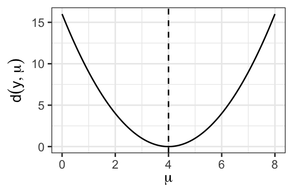
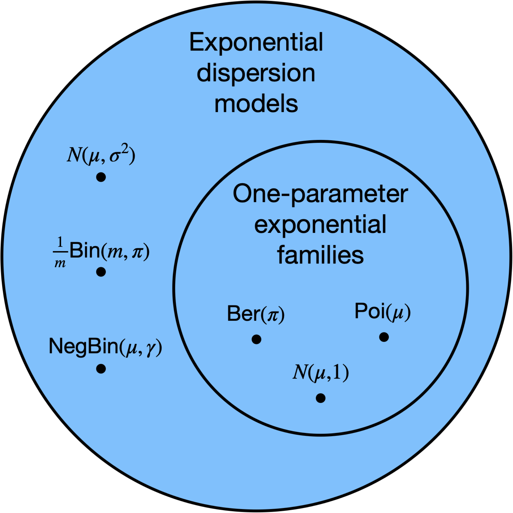
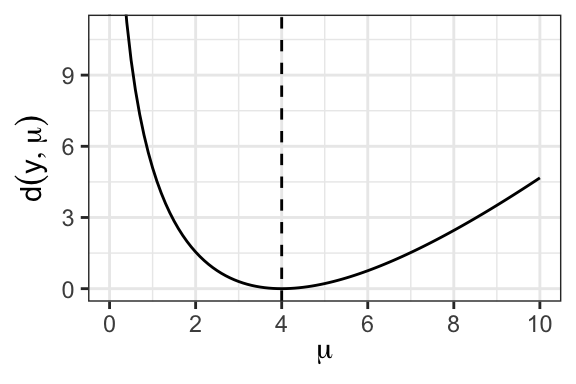

19 Exponential dispersion model (EDM) distributions
19.1 Definition
Let’s start with the Gaussian distribution. If \(y \sim N(\mu, \sigma^2)\), then it has the following density with respect to the Lebesgue measure \(\nu\) on \(\mathbb{R}\):
\[ \begin{split} f_{\mu, \sigma^2}(y) &= \frac{1}{\sqrt{2\pi \sigma^2}}\exp\left(-\frac{1}{2\sigma^2}(y-\mu)^2\right) \\ &= \exp\left(\frac{\mu y - \frac{1}{2}\mu^2}{\sigma^2}\right) \cdot \frac{1}{\sqrt{2\pi \sigma^2}}\exp\left(-\frac1{2\sigma^2} y^2\right). \end{split} \]
We can consider a more general class of densities with respect to any measure \(\nu\):
\[ f_{\theta, \phi}(y) \equiv \exp\left(\frac{\theta y - \psi(\theta)}{\phi}\right)h(y, \phi), \quad \theta \in \Theta \subseteq \mathbb{R}, \ \phi > 0. \tag{19.1}\]
Here \(\theta\) is called the natural parameter, \(\psi\) is called the log-partition function, \(\Theta \equiv \{\theta: \psi(\theta) < \infty\}\) is called the natural parameter space,1 \(\phi > 0\) is called the dispersion parameter, and \(h\) is called the base density. The distribution with density \(f_{\theta, \phi}\) with respect to a measure \(\nu\) on \(\mathbb{R}\) is called an exponential dispersion model (EDM).2 Sometimes, we parameterize this distribution using its mean and dispersion, writing
\[ y \sim \text{EDM}(\mu, \phi). \]
When \(\phi = 1\), the distribution becomes a one-parameter natural exponential family (see Figure 19.1).

The following proposition presents a useful property of EDMs, which facilitates inference by ruling out pathological cases.
Proposition 19.1 The support of \(y \sim \text{EDM}(\mu, \phi)\) remains fixed as \((\mu, \phi)\) vary.
19.2 Examples
19.2.1 Normal distribution
As derived above, \(y \sim N(\mu, \sigma^2)\) is an EDM with
\[ \theta = \mu, \quad \psi(\theta) = -\frac 12 \theta^2, \quad \phi = \sigma^2, \quad h(y, \phi) = \frac{1}{\sqrt{2\pi \sigma^2}}\exp\left(-\frac1{2\sigma^2} y^2\right). \]
19.2.2 Bernoulli distribution
Suppose \(y \sim \text{Ber}(\mu)\). Then, we have
\[ f(y) = \mu^{y}(1-\mu)^{1-y} = \exp\left(y \log \frac{\mu}{1-\mu} + \log(1-\mu) \right). \]
Therefore, we have \(\theta = \log \frac{\mu}{1-\mu}\), so that \(\log(1-\mu) = -\log(1+e^\theta)\). It follows that
\[ \theta = \log \frac{\mu}{1-\mu}, \quad \psi(\theta) = \log(1+e^\theta), \quad \phi = 1, \quad h(y) = 1. \]
Hence, the Bernoulli distribution is an EDM, as well as a one-parameter exponential family. Note that \(\text{Ber}(0)\) and \(\text{Ber}(1)\) are not included in this class of EDMs, because there is no \(\theta \in \Theta = \mathbb{R}\) that gives rise to \(\mu = 0\) or \(\mu = 1\). Hence, \(\mu \in (0,1)\), and the support of any Bernoulli EDM is \(\{0,1\}\).
19.2.3 Binomial distribution
Consider the binomial proportion \(y\): \(my \sim \text{Bin}(m, \mu)\). We have
\[ \begin{split} f(y) &= {m \choose my}\mu^{my}(1-\mu)^{m(1-y)} \\ &= \exp\left(m\left(y \log \frac{\mu}{1-\mu} + \log(1-\mu)\right)\right){m \choose my}, \end{split} \]
so
\[ \theta = \log\frac{\mu}{1-\mu}, \quad \psi(\theta) = \frac{e^{\theta}}{1 + e^{\theta}}, \quad \phi = 1/m, \quad h(y, \phi) = {m \choose my}. \]
Note that \(\text{Bin}(m, 0)\) and \(\text{Bin}(m, 1)\) are not included in this class of EDMs, for the same reason as above. Hence, \(\mu \in (0,1)\), and the support of any binomial EDM is \(\{0,\frac{1}{m}, \frac{2}{m}, \dots, 1\}\).
19.2.4 Poisson distribution
Suppose \(y \sim \text{Poi}(\mu)\). We have
\[ f(y) = e^{-\mu}\frac{\mu^y}{y!} = \exp(y \log \mu - \mu)\frac{1}{y!}. \]
Therefore, we have \(\theta = \log \mu\), so that \(\mu = e^\theta\). It follows that
\[ \theta = \log \mu, \quad \psi(\theta) = e^\theta,\quad \phi = 1, \quad h(y) = \frac{1}{y!}. \]
Hence, the Poisson distribution is an EDM, as well as a one-parameter exponential family. Note that \(\text{Poi}(0)\) is not included in this class of EDMs, because there is no \(\theta \in \Theta = \mathbb{R}\) that gives rise to \(\mu = 0\). Hence, \(\mu \in (0,\infty)\), and the support of any Poisson EDM is \(\mathbb{N}\).
Many other examples fall into this class, including the negative binomial, gamma, and inverse-Gaussian distributions. We will see at least some of these in the next chapter.
19.3 Moments of exponential dispersion model distributions
It turns out that the derivatives of the log-partition function \(\psi\) give the moments of \(y\). Indeed, let’s start with the relationship
\[ \int f_{\theta, \phi}(y)d\nu(y) = \int \exp\left(\frac{\theta y - \psi(\theta)}{\phi}\right)h(y, \phi) d\nu(y) = 1. \]
Differentiating in \(\theta\) and interchanging the derivative and the integral, we obtain
\[ 0 = \frac{d}{d\theta} \int f_{\theta, \phi}(y)dy = \int \frac{y - \dot \psi(\theta)}{\phi}f_{\theta, \phi}(y) dy, \]
from which it follows that
\[ \dot \psi(\theta) = \int \dot \psi(\theta)f_{\theta, \phi}(y)dy = \int y f_{\theta, \phi}(y)dy = \mathbb{E}[y] \equiv \mu. \tag{19.2}\]
Thus, the first derivative of the log partition function is the mean of \(y\). Differentiating again, we get
\[ \begin{split} \phi \cdot \ddot \psi(\theta) &= \phi \int \ddot \psi(\theta) f_{\theta, \phi}(y) d\nu(y) \\ &= \int (y - \dot \psi(\theta))^2 f_{\theta, \phi}(y) dy = \int (y - \mu)^2f_{\theta, \phi}(y) d\nu(y) \\ &= \text{Var}[y]. \end{split} \]
Thus, the second derivative of the log-partition function multiplied by the dispersion parameter is the variance of \(y\). The following proposition summarizes these results.
Proposition 19.2 (EDM moments) If \(y \sim \text{EDM}(\mu, \phi)\), then \[ \mathbb E[y] = \dot \psi(\theta), \quad \text{Var}[y] = \phi \cdot \ddot \psi(\theta). \]
19.4 Relationships among the mean, variance, and natural parameter
19.4.1 Relationship between the mean and the natural parameter
The log-partition function \(\psi\) induces a connection (19.2) between the natural parameter \(\theta\) and the mean \(\mu\). Because
\[ \frac{d\mu}{d\theta} = \frac{d}{d\theta}\dot \psi(\theta) = \ddot \psi(\theta) = \frac{1}{\phi}\text{Var}[y] > 0, \tag{19.3}\]
it follows that \(\mu\) is a strictly increasing function of \(\theta\), so in particular the mapping between \(\mu\) and \(\theta\) is bijective. Therefore, we can think of equivalently parameterizing the distribution via \(\mu\) or \(\theta\).
19.4.2 Relationship between the mean and variance
Note that the mean of an EDM, together with the dispersion parameter, determines its variance (since it determines the natural parameter \(\theta\)). Define
\[ V(\mu) \equiv \frac{d\mu}{d\theta}, \]
so that \(\text{Var}[y] = \phi V(\mu)\). For example, a Poisson random variable with mean \(\mu\) has variance \(\mu\) and a Bernoulli random variable with mean \(\mu\) has \(V(\mu) = \mu(1-\mu)\). The mean-variance relationship turns out to characterize the EDM, i.e. an EDM with mean equal to its variance is the Poisson distribution. For all EDMs except the normal distribution, the variance depends nontrivially on the mean. Therefore, heteroskedasticity is a natural feature of EDMs (rather than a pathology that needs to be corrected for).
19.5 The unit deviance
A key quantity in the analysis of normal linear regression models is \((y, \mu) \mapsto (y - \mu)^2\), which is a notion of distance between the parameter \(\mu\) and the observation \(y\). The unit deviance is a generalization of this quantity to EDMs. As a starting point, consider the log-likelihood of an EDM: \[ \ell(y, \mu) = \frac{\theta y - \psi(\theta)}{\phi} + \log h(y, \phi) = \frac{\theta(\mu) y - \psi(\theta(\mu))}{\phi} + \log h(y, \phi), \] where \(\theta(\mu) = \dot \psi^{-1}(\mu)\), recalling the relationship (19.2). The quantity \(\ell(y, \mu)\) is larger to the extent that \(\mu\) is a better fit for \(y\). Furthermore, it is easy to verify that \(\mu \mapsto \ell(y, \mu)\) is maximized by \(\mu = y\). Motivated by this observation, we calculate that twice the log-likelihood ratio between \(\mu = \mu\) and \(\mu = y\) is \[ \begin{split} &2(\ell(y, y) - \ell(y, \mu)) \\ &\quad= \frac{2\{[\theta(y) y - \psi(\theta(y))] - [\theta(\mu) y - \psi(\theta(\mu))]\}}{\phi} \\ &\quad\equiv \frac{d(y, \mu)}{\phi}. \end{split} \] The quantity in the numerator is the unit deviance \(d(y, \mu)\), defined as the dispersion \(\phi\) times twice the log-likelihood ratio between \(y\) and \(\mu\). As we will see in Section 19.5.1, \(d(y, \mu)\) generalizes the quantity \((y - \mu)^2\) for the normal distribution. The following proposition summarizes a few key properties of the unit deviance.
Proposition 19.3 (Unit deviance properties) When viewed as a function of \(\mu\), the unit deviance \(d(y, \mu)\) is nonnegative function that achieves a unique global minimum of zero for \(\mu = y\) and increases as \(\mu\) moves away from \(y\).
Proof. Differentiating \(d(y, \mu)\) in \(\mu\), we have \[ \frac{\partial d(y, \mu)}{\partial \mu} = \frac{\partial d(y, \mu)}{\partial \theta} \frac{\partial \theta}{\partial \mu} = \frac{\mu - y}{V(\mu)}. \] Since \(V(\mu) > 0\), this establishes that \(d(y, \mu)\) decreases on \(\mu \in (\infty, y)\) and then increases on \((y, \infty)\), Therefore, \(d(y, \mu) \geq d(y, y) = 0\) for all \(\mu\).
19.5.1 Example: Normal distribution
For the normal distribution, we have \(\theta = \mu\) and \(\psi(\theta) = \frac12 \theta^2\). Therefore, \[ \begin{split} d(y, \mu) &= 2\{[\theta(y) y - \psi(\theta(y))] - [\theta(\mu) y - \psi(\theta(\mu))]\} \\ &= 2\{[y^2 - \tfrac12 y^2] - [\mu y - \tfrac12 \mu^2]\} \\ &= (y - \mu)^2. \end{split} \] Figure 19.2 displays an example of the normal unit deviance.
19.5.2 Example: Poisson distribution
For the Poisson distribution, we have \(\theta = \log \mu\) and \(\psi(\theta) = e^\theta\), so
\[ \begin{split} d(y, \mu) &= 2\{[\theta(y) y - \psi(\theta(y))] - [\theta(\mu) y - \psi(\theta(\mu))]\} \\ &= 2\{[y\log y - y] - [y \log \mu - \mu]\} \\ &= 2\left(y\log \frac{y}{\mu} - (y - \mu)\right). \end{split} \]
See Figure 19.3 for an example of the shape of this function.

Note that the Poisson deviance is asymmetric about \(\mu = y\). This is a consequence of the nontrivial mean-variance relationship for the Poisson distribution. In particular, the Poisson distribution’s variance grows with its mean. Therefore, an observation of \(y = 4\) is less likely to have come from a Poisson distribution with mean \(\mu = 2\) than from a Poisson distribution with mean \(\mu = 6\).
19.6 Small-dispersion approximations to an EDM
If the dispersion \(\phi\) is small, then that means that \(y\) is a fairly precise estimate of \(\mu\), similar to an average of multiple independent samples from a mean-\(\mu\) distribution. Consider, for example, that \(\frac{1}{m}\text{Bin}(m, \mu)\) is the mean of \(m\) i.i.d. draws from \(\text{Ber}(\mu)\). In this case, we can use either the normal approximation or the saddlepoint approximation to approximate the EDM density. For the sake of this section, we will abuse notation by denoting by \(f_{\mu, \phi}\) the EDM with mean \(\mu\) and dispersion \(\phi\).
19.6.1 The normal approximation
19.6.1.1 The approximation
For small values of \(\phi\), we can hope to approximate \(f_{\mu, \phi}\) with a normal distribution. Recall that the mean and variance of this distribution are \(\mu\) and \(\phi \cdot V(\mu)\), respectively. The central limit theorem gives
\[ \frac{y - \mu}{\sqrt{\phi \cdot V(\mu)}} \rightarrow_d N(0,1) \quad \text{as} \quad \phi \rightarrow 0, \]
so
\[ y \overset \cdot \sim N(\mu, \phi \cdot V(\mu)) \equiv \tilde f^{\text{normal}}_{\mu, \phi}. \]
For example, we have
\[ \text{Poi}(\mu) \approx N(\mu, \mu). \]
For the normal EDM, note that the normal approximation is exact. One consequence of the normal approximation is
\[ \frac{(y - \mu)^2}{\phi \cdot V(\mu)} \overset \cdot \sim \chi^2_1. \]
This fact will be useful to us as we carry out inference for GLMs.
19.6.1.2 Normal approximation accuracy
We have
\[ \tilde f^{\text{normal}}_{\mu, \phi}(y) = f_{\mu, \phi}(y) + O(\sqrt{\phi}). \]
In practice, the rule of thumb for the applicability of this approximation is that
\[ \tau \equiv \frac{\phi \cdot V(\mu)}{(\mu - \text{boundary})^2} \leq \frac{1}{5}. \]
Here, “boundary” represents the nearest boundary of the parameter space to \(\mu\). For example, if \(y \sim \frac{1}{m}\text{Bin}(m, \mu)\), then we have
\[ \begin{split} \tau &= \frac{\frac{1}{m} \cdot \mu \cdot (1-\mu)}{\min(\mu, 1-\mu)^2} \\ &= \frac{1}{m} \cdot \max\left(\frac{\mu}{1-\mu}, \frac{1-\mu}{\mu}\right) \\ &\approx \frac{1}{m} \cdot \max\left(\frac 1 \mu, \frac 1 {1-\mu}\right), \end{split} \]
so \(\tau \leq 1/5\) roughly if \(m \mu \leq 5\) and \(m (1-\mu) \leq 5\). For Poisson distributions, we always have \(\tau = 1\), but for some reason small-dispersion asymptotics still applies as \(\mu \rightarrow \infty\) as opposed to \(\tau \rightarrow 0\). The criterion \(\tau \leq 1/5\) is satisfied when \(\mu \leq 5\).
19.6.2 The saddlepoint approximation
19.6.2.1 The approximation
Another approximation to the EDM density is the saddlepoint approximation, which tends to be more accurate than the normal approximation. The reason the normal approximation may be inaccurate is that the quality of the central limit approximation degrades as one enters the tails of the distribution. In particular, the normal approximation to \(f_{\mu, \phi}(y)\) may be poor if \(\mu\) is far from \(y\). The saddlepoint approximation is built on the observation that the EDM density for \(f_{\mu, \phi}(y)\) can be written in terms of the density \(f_{y, \phi}(y)\); the latter density is by definition evaluated at its mean. Indeed,
\[ \begin{split} f_{\mu, \phi}(y) &\equiv \exp\left(\frac{\theta y - \psi(\theta)}{\phi}\right)h(y, \phi) \\ &= \exp\left(-\frac{d(y, \mu)}{2\phi}\right)\exp\left(\frac{\theta(y) y - \psi(\theta(y))}{\phi}\right) h(y, \phi) \\ &= \exp\left(-\frac{d(y, \mu)}{2\phi}\right)f_{y, \phi}(y). \end{split} \tag{19.4}\]
Now, we apply the central limit theorem to approximate \(f_{y, \phi}(y)\):
\[ f_{y, \phi}(y) \approx \frac{1}{\sqrt{2\pi \phi V(y)}}. \]
Substituting this approximation into (19.4), we obtain the saddlepoint approximation:
\[ f_{\mu, \phi}(y) \approx \frac{1}{\sqrt{2\pi \phi V(y)}}\exp\left(-\frac{d(y, \mu)}{2\phi}\right) \equiv \widetilde f^{\text{saddle}}_{\mu, \phi}(y). \]
For the normal EDM, note that the normal approximation is exact. For the Poisson distribution, we get
\[ \widetilde f^{\text{saddle}}_{\mu, \phi}(y) = \frac{1}{\sqrt{2\pi y}}\exp\left(-y \log \frac y \mu + (y - \mu)\right). \]
The approximation can be shown to lead to the following consequence:
\[ \frac{d(y, \mu)}{\phi} \overset \cdot \sim \chi^2_1. \]
Here, we are using the unit deviance rather than the squared distance to measure the deviation of \(\mu\) from \(y\). This fact will be useful to us as we carry out inference for GLMs.
19.6.2.2 Saddlepoint approximation accuracy
We have still used a normal approximation, but this time we have used it to approximate \(f_{y, \phi}(y)\) instead of \(f_{\mu, \phi}(y)\). Since the normal approximation is applied to a distribution (\(f_{y, \phi}\)) at its mean, we expect it to be more accurate than a normal approximation applied to a distribution (\(f_{\mu, \phi}\)) at a point potentially far from its mean. The saddlepoint approximation yields an approximation to the density that is multiplicative rather than additive, and of order \(O(\phi)\) rather than \(O(\sqrt{\phi})\):
\[ \tilde f^{\text{saddle}}_{\mu, \phi}(y) = f_{\mu, \phi}(y) \cdot (1 + O(\phi)). \]
In practice, the rule of thumb for the applicability of this approximation is that \(\tau \leq 1/3\); the looser requirement on \(\tau\) reflects the greater accuracy of the saddlepoint approximation. This translates to \(m\mu \geq 3\) and \(m(1-\mu) \geq 3\) for the binomial and \(\mu \geq 3\) for the Poisson.
19.6.3 Comparing the two approximations
The saddlepoint approximation is more accurate than the normal approximation, as discussed above. However, the accuracy of the saddlepoint approximation relies on the assumption that the entire parametric form of the EDM is correctly specified. On the other hand, the accuracy of the normal distribution requires only that the first two moments of the EDM are correctly specified.
In this class, we will always have \(\Theta = \mathbb R\).↩︎
If you are not familiar with measure theory, you can view \(\nu\) as specifying the support of a distribution (the set of values it can take). For example, for binary \(y\), \(\nu\) would indicate that \(y\) is supported on \(\{0,1\}\), and the “density” \(f_{\theta, \phi}\) would be a probability mass function.↩︎